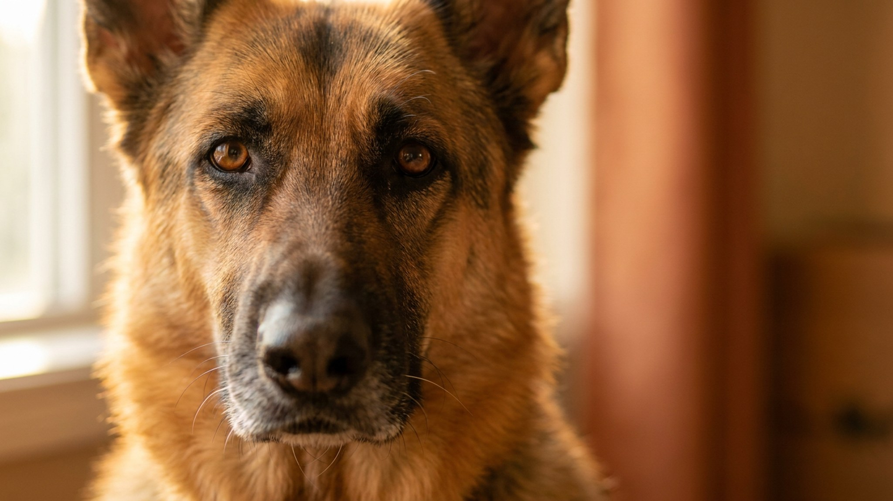

Ребёнок бежит по коридору — аусси уже рядом, прихватывает за пятку и направляет «стадо» в угол. Это не агрессия и не дурной характер. Австралийская овчарка была выведена для управления овцами без команды хозяина — и этот инстинкт никуда не делся. Ниже — как превратить пастушью энергию в ресурс, а не источник конфликтов.
🐾 Дневник здоровья питомца — в кармане
Вес, прививки, симптомы и напоминания в одном приложении. AnimaLife следит за здоровьем питомца вместо вас.
Австралийская овчарка создавалась для самостоятельной работы: аусси принимает решения без ожидания команды, постоянно сканирует пространство и «ведёт» то, что движется. В квартире роль овец автоматически получают дети, кошки, велосипеды и мячи. Кружение вокруг, подталкивание, прихватывание за пятки — классический пастуший алгоритм, а не выпад.
Подавлять эту черту криком или наказанием не работает: инстинкт возвращается в следующей же ситуации. Задача хозяина — дать ему легальный выход.
Аусси без достаточной нагрузки становится тревожным и изобретательным в деструкции. Два коротких выгула — не выход для этой породы.
Физической усталости аусси недостаточно — порода нуждается в задачах для головы. Именно умственная нагрузка гасит пастушью тревогу эффективнее всего.
Когда австралийская овчарка начинает кружить вокруг ребёнка или хватать за пятки, нужна чёткая переадресация, а не запрет.
Если прихватывание сопровождается прорезыванием кожи, собака не реагирует на команды в возбуждённом состоянии или пастушье поведение направлено на одного члена семьи — стоит обратиться к кинологу, специализирующемуся на породах пастушьей группы. Австралийская овчарка отзывчива к грамотной работе: результат обычно виден уже на первых занятиях.
🐾 Не уверены, что это опасно?
Опишите симптом в AnimaLife — AI-ветеринар за минуту подскажет, что в пределах нормы, а когда пора к врачу.
🐾 Понравился разбор?
Подпишитесь на канал — каждый день разбираем по одному тревожному симптому у кошек и собак: что в пределах нормы, а когда пора к врачу. Подпишитесь, чтобы не пропустить разбор, который может спасти здоровье вашего питомца.
Материал носит информационный характер и не заменяет очную консультацию ветеринара.